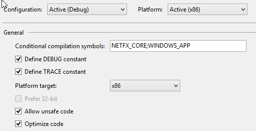

The Hands On Labs to complete a sample application for Windows 8.1 and the Kinect 2 for Windows
Estimated Time to Complete: 20min
This lab is part of a series of hands on labs which teach you how to create a Windows 8.1 Store Application using almost every available feature of the Kinect 2. This is the fifth lab in the series, and it teaches you how to assemble a body mask from the Kinect, along with the feeds from the previous labs.
This lab will explain the following:
This lab comes with a starting point code solution and a completed code solution of the exercises.
This exercise will teach you how to create a body mask in a Kinect for Windows 2 application for Windows 8.1. This lab and all subsequent labs in this series are built using C# and assumes you have a fundamental knowledge of the C# language.
The screenshots here are from Visual Studio Pro 2013 Update 2 but Community Edition is identical.
This lab builds upon the previous lab, which integrated the multi-source frame reader.
The Kinect 2 is good at recognizing bodies by internally processing the depth and infrared feeds together. It’s possible to retrieve a special frame from the Kinect 2 which is aware of exact co-ordinates in an image where a known body is visible. This is called the Body Index Frame. This lab describes how to create a Body Mask with this frame, the depth, and color frames. This mask will then be used to determine which pixels should be shown and which should be made invisible, so that only the recognized bodies are showing in the resulting feed.
To create a Body Mask from the Kinect 2 using the MultisourceFrameReader, follow the steps below:
Open the existing Kinect 2 Sample solution in Visual Studio, or the copy you have from the end of the previous lab.
To begin add a new DisplayFrameType to the enum, then new color mapping data arrays to handle the data conversion, and finally a co-ordinate mapper, which is explained later. Open the MainPage.xaml.cs file from the Solution Explorer. Copy the following highlighted code to setup the variables required in this lab:
namespace Kinect2Sample
{
public enum DisplayFrameType
{
Infrared,
Color,
Depth,
BodyMask
}
public sealed partial class MainPage : Page, INotifyPropertyChanged
{
//...
private MultiSourceFrameReader multiSourceFrameReader = null;
private CoordinateMapper coordinateMapper = null;
//...
//Depth Frame
private ushort[] depthFrameData = null;
private byte[] depthPixels = null;
//BodyMask Frames
private DepthSpacePoint[] colorMappedToDepthPoints = null;
public event PropertyChangedEventHandler PropertyChanged;
//...
}
}
You should initialize those variables in the SetupCurrentDisplay method, which is called every time the current display changes. There is a switch statement which uses the currentDisplayFrameType to determine what to initialize and the size of the bitmap. You should add a new case for the BodyMask in this switch statement. To do this, copy the highlighted code below:
private void SetupCurrentDisplay(DisplayFrameType newDisplayFrameType)
{
currentDisplayFrameType = newDisplayFrameType;
// Frames used by more than one type are declared outside the switch
FrameDescription colorFrameDescription = null;
switch (currentDisplayFrameType)
{
case DisplayFrameType.Infrared:
//...
break;
case DisplayFrameType.Color:
colorFrameDescription =
this.kinectSensor.ColorFrameSource.FrameDescription;
//...
break;
case DisplayFrameType.Depth:
//...
break;
case DisplayFrameType.BodyMask:
colorFrameDescription =
this.kinectSensor.ColorFrameSource.FrameDescription;
this.CurrentFrameDescription = colorFrameDescription;
// allocate space to put the pixels being
// received and converted
this.colorMappedToDepthPoints =
new DepthSpacePoint[colorFrameDescription.Width *
colorFrameDescription.Height];
this.bitmap = new WriteableBitmap(
colorFrameDescription.Width,
colorFrameDescription.Height);
break;
default:
break;
}
}
Notice how the FrameDescription for color has moved to be declared outside the switch statement. Now the colorFrameDescription is being used by more than one type of display, it needs to be accessed for either display type.
Add the new FrameSourceType when the MultiSourceFrameReader is opened. In the MainPage constructor add the FrameSourceTypes.BodyIndex to the following line. As well as the new FrameSourceType, you should initialize the Co-ordinate Mapper in the constructor also. Copy the highlighted code below to do this:
this.coordinateMapper = this.kinectSensor.CoordinateMapper;this.multiSourceFrameReader = this.kinectSensor.OpenMultiSourceFrameReader( FrameSourceTypes.Infrared | FrameSourceTypes.Color | FrameSourceTypes.Depth| FrameSourceTypes.BodyIndex);
Now that the frame variables are initialized, you can setup the logic for frame arrival within Reader_MultiSourceFrameArrived. Once again, there is a switch statement here to handle the other frame types. The other frame types are disposed of through utilization of the using pattern, which will automatically collect and dispose the object which was initialized in the using statement. The Kinect 2 should deliver frames at a rate of ~30fps so it’s important to free up memory where possible. Also because it’s processor intensive to manipulate frames at this frequency, you want to limit the work done each time a new frame arrives. The Body Mask display requires three frame types from the MultiSourceFrame: the Depth Frame, the Body Index Frame, and the Color Frame. To use these and dispose of them all at once it’s more appropriate to use a try, finally pattern. In the finally section, all the used objects can be disposed of at once.
As in the previous step, some of the frames are now being used by multiple cases so they must be initialized outside of the switch statement. There is a lot to do here so you should start with this simple refactor of existing code, and add the new case with a try, finally clause, and more code will be added later: To do this copy the highlighted code below:
private void Reader_MultiSourceFrameArrived(MultiSourceFrameReader sender, MultiSourceFrameArrivedEventArgs e)
{
//...
// If the Frame has expired by the time we process this event, return.
if (multiSourceFrame == null)
{
return;
}
DepthFrame depthFrame = null;
ColorFrame colorFrame = null;
InfraredFrame infraredFrame = null;
BodyIndexFrame bodyIndexFrame = null;
switch (currentDisplayFrameType)
{
case DisplayFrameType.Infrared:
using (infraredFrame =
multiSourceFrame.InfraredFrameReference.AcquireFrame())
//...
break;
case DisplayFrameType.Color:
using (colorFrame =
multiSourceFrame.ColorFrameReference.AcquireFrame())
//...
break;
case DisplayFrameType.Depth:
using (depthFrame =
multiSourceFrame.DepthFrameReference.AcquireFrame())
//...
break;
case DisplayFrameType.BodyMask:
// Put in a try catch to utilise finally() and
// clean up frames
try
{
}
finally
{
}
break;
default:
break;
}
}
switch (currentDisplayFrameType)
{
//...
case DisplayFrameType.BodyMask:
// Put in a try catch to utilise finally() and clean up frames
try
{
depthFrame =
multiSourceFrame.DepthFrameReference.AcquireFrame();
bodyIndexFrame =
multiSourceFrame.BodyIndexFrameReference.AcquireFrame();
colorFrame =
multiSourceFrame.ColorFrameReference.AcquireFrame();
if ((depthFrame == null)
|| (colorFrame == null)
|| (bodyIndexFrame == null))
{
return;
}
}
finally
{
if (depthFrame != null)
{
depthFrame.Dispose();
}
if (colorFrame != null)
{
colorFrame.Dispose();
}
if (bodyIndexFrame != null)
{
bodyIndexFrame.Dispose();
}
}
break;
//...
}
You will use these three frames together to get the data which will show the color frame and the depth frame together as one mapped frame. This means that for each color pixel, there is a relevant depth pixel. If these feeds were from the same camera with the same type, there would be no need to map as they would already be naturally relative to one another. But the resolutions of the feeds are different so there is a helper class within the Kinect 2 SDK called the Co-ordinate Mapper:
The Co-ordinate Mapper can skew and scale both the depth and color feed to force them to become relative to one another. There is a method which does this called MapColorFrameToDepthSpace() which takes a ulong[] of the known depth data. Mapping the color data and the depth data together is a demanding task. To maintain an acceptable framerate in this application, you will use another method in the Co-ordinate Mapper: MapColorFrameToDepthSpaceUsingIBuffer() which will do the same thing with an Ibuffer instead of a ulong[] ( for better memory management and less copying internally). Now it’s time to use the co-ordinate mapper to finish setting up the frame, and the buffer to be calculated in a new method. The work here results in a method called ShowMappedBodyFrame which will be created next. To do this copy the highlighted code below:
using Windows.Storage.Streams;//... // In Reader_MultiSourceFrameArrived()...BodyIndexFrame bodyIndexFrame = null;IBuffer depthFrameDataBuffer = null;IBuffer bodyIndexFrameData = null;// Com interface for unsafe byte manipulationIBufferByteAccess bodyIndexByteAccess = null;switch (currentDisplayFrameType) { //... case DisplayFrameType.BodyMask: // Put in a try catch to utilise finally() and clean up frames try { depthFrame = multiSourceFrame.DepthFrameReference.AcquireFrame(); bodyIndexFrame = multiSourceFrame.BodyIndexFrameReference.AcquireFrame(); colorFrame = multiSourceFrame.ColorFrameReference.AcquireFrame(); if ((depthFrame == null) || (colorFrame == null) || (bodyIndexFrame == null)) { return; }// Access the depth frame data directly via//LockImageBuffer to avoid making a copydepthFrameDataBuffer = depthFrame.LockImageBuffer();this.coordinateMapper.MapColorFrameToDepthSpaceUsingIBuffer(depthFrameDataBuffer,this.colorMappedToDepthPoints);// Process ColorcolorFrame.CopyConvertedFrameDataToBuffer(this.bitmap.PixelBuffer,ColorImageFormat.Bgra);// Access the body index frame data directly via// LockImageBuffer to avoid making a copybodyIndexFrameData = bodyIndexFrame.LockImageBuffer();ShowMappedBodyFrame(depthFrame.FrameDescription.Width,depthFrame.FrameDescription.Height,bodyIndexFrameData, bodyIndexByteAccess);} finally { // ... disposing of depth, color and bodyIndex frames ...if (depthFrameDataBuffer != null){// We must force a release of the IBuffer in order to// ensure that we have dropped all references to it.System.Runtime.InteropServices.Marshal.ReleaseComObject(depthFrameDataBuffer);}if (bodyIndexFrameData != null){System.Runtime.InteropServices.Marshal.ReleaseComObject(bodyIndexFrameData);}if (bodyIndexByteAccess != null){System.Runtime.InteropServices.Marshal.ReleaseComObject(bodyIndexByteAccess);}} break; //... }

Do this for both x64 and x86 configurations.
To expose and manipulate the buffer behind the destination bitmap, you can use a Com interface called IBufferByteAccess through interop services. Add the following method at the bottom of the MainPage Class:
using System.Runtime.InteropServices;//... namespace Kinect2Sample { //... public sealed partial class MainPage : Page, INotifyPropertyChanged { //...[Guid("905a0fef-bc53-11df-8c49-001e4fc686da"),InterfaceType(ComInterfaceType.InterfaceIsIUnknown)]interface IBufferByteAccess{unsafe void Buffer(out byte* pByte);}} }
unsafe private void ShowMappedBodyFrame(int depthWidth,int depthHeight, IBuffer bodyIndexFrameData,IBufferByteAccess bodyIndexByteAccess){bodyIndexByteAccess = (IBufferByteAccess)bodyIndexFrameData;byte* bodyIndexBytes = null;bodyIndexByteAccess.Buffer(out bodyIndexBytes);fixed (DepthSpacePoint* colorMappedToDepthPointsPointer =this.colorMappedToDepthPoints){IBufferByteAccess bitmapBackBufferByteAccess =(IBufferByteAccess)this.bitmap.PixelBuffer;byte* bitmapBackBufferBytes = null;bitmapBackBufferByteAccess.Buffer(out bitmapBackBufferBytes);// Treat the color data as 4-byte pixelsuint* bitmapPixelsPointer = (uint*)bitmapBackBufferBytes;// Loop over each row and column of the color image// Zero out any pixels that don't correspond to a body indexint colorMappedLength = this.colorMappedToDepthPoints.Length;for (int colorIndex = 0;colorIndex < colorMappedLength;++colorIndex){float colorMappedToDepthX =colorMappedToDepthPointsPointer[colorIndex].X;float colorMappedToDepthY =colorMappedToDepthPointsPointer[colorIndex].Y;// The sentinel value is -inf, -inf,// meaning that no depth pixel corresponds to// this color pixel.if (!float.IsNegativeInfinity(colorMappedToDepthX) &&!float.IsNegativeInfinity(colorMappedToDepthY)){// Make sure the depth pixel maps to a valid// point in color spaceint depthX = (int)(colorMappedToDepthX + 0.5f);int depthY = (int)(colorMappedToDepthY + 0.5f);// If the point is not valid, there is// no body index there.if ((depthX >= 0)&& (depthX < depthWidth)&& (depthY >= 0)&& (depthY < depthHeight)){int depthIndex = (depthY * depthWidth) + depthX;// If we are tracking a body for the current pixel,// do not zero out the pixelif (bodyIndexBytes[depthIndex] != 0xff){// this bodyIndexByte is good and is a body,// loop again.continue;}}}// this pixel does not correspond to a body// so make it black and transparentbitmapPixelsPointer[colorIndex] = 0;}}this.bitmap.Invalidate();FrameDisplayImage.Source = this.bitmap;}
Add a button to turn on the Body Mask. Open the MainPage.xaml and add a new button called Body Mask, with a click event, like so:
<ScrollViewer Grid.Row="2" ScrollViewer.HorizontalScrollBarVisibility="Auto"
ScrollViewer.VerticalScrollBarVisibility="Auto">
<StackPanel Orientation="Horizontal">
<Button Content="Infrared" Style="{StaticResource FrameSelectorButtonStyle}"
Click="InfraredButton_Click"/>
<Button Content="Color" Style="{StaticResource FrameSelectorButtonStyle}"
Click="ColorButton_Click"/>
<Button Content="Depth" Style="{StaticResource FrameSelectorButtonStyle}"
Click="DepthButton_Click"/>
<Button Style="{StaticResource FrameSelectorButtonStyle}"
Click="BodyMask_Click">
<TextBlock Text="Body Mask" TextWrapping="Wrap"/>
</Button>
</StackPanel>
</ScrollViewer>
Then open the code behind file: MainPage.xaml.cs and add the BodyMaskButton_Click method:
private void BodyMask_Click(object sender, RoutedEventArgs e){SetupCurrentDisplay(DisplayFrameType.BodyMask);}
Build and Run the application. Click the Body Mask button and stand up so the Kinect 2 can recognize your whole body, and the body is masked with the rest of the image removed!
But there is an issue, the framerate is very bad when viewing the body mask. This is because the attached debugger is doing a lot of work to make the unsafe code manageable in a debugging context. To get an idea of the live framerate of the release version, run the program without the attached debugger by selecting DEBUG, then Start Without Debugging, or press Ctrl + F5. Now the framerate is smooth because the program is allowed to run optimized code, unhindered by the debugger.
You may have noticed some funny looking activity when sitting very close to the Kinect, having a dramatic depth difference between parts of your body, or something covering the color camera. Depending on the cameras position, it can seem like the camera can see your body outline through objects, like XRAY vision. For example, my hand in this photo under the desk:
That’s because the color camera is not the camera which decides if something is a body part or not, the depth array does. Both feeds are mapped together so they appear as one camera view but this is deceptive because on the Kinect unit, the depth array beams are in the center of the device, while the color camera is on the left. So even if you cover the color camera lens with something, the depth array can see a body and this comes through in the BodyIndexFrame, then the color is rendered where that body is, even if it’s not a realistic color. This is not an issue when the Kinect 2 is a normal distance from the user and the view is unimpeded (as in most lounge rooms), yet it is interesting nonetheless. It also clearly shows the distinction between frame types and how the co-ordinate mapper successfully allows many feeds to appear as one.
This lab taught you how to retrieve and use the Body Index Frame and others from the MultiSourceFrameReader, and use that frame data to cut out known bodies in a bitmap image.
The Co-ordinate Mapper is used for almost every useful function of the Kinect relating to super-imposing, or the use of multiple frame types at once. It’s important to familiarize yourself with how the co-ordinate mapper works. This example used the IBuffer and the color to body index frames, but there are many other mapping methods available through the co-ordinate mapper.
The Body Index Frame shows which parts of a single frame are a body or not, and which of the six possible bodies each pixel is a part of. The body index is useful but there are more advanced things you will want from the Kinect 2 sensor like Joints and orientations of joints for each body.
In the next lab, you will implement a new visual into the application, the Skeleton from Body Data.
There is code available which is the completed solution from the work in this lab. The next lab will begin from this code.